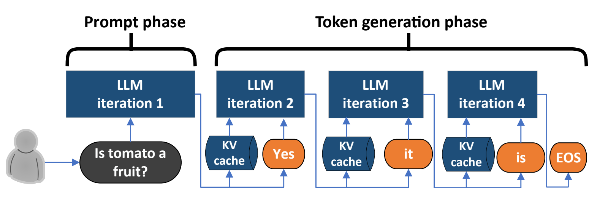
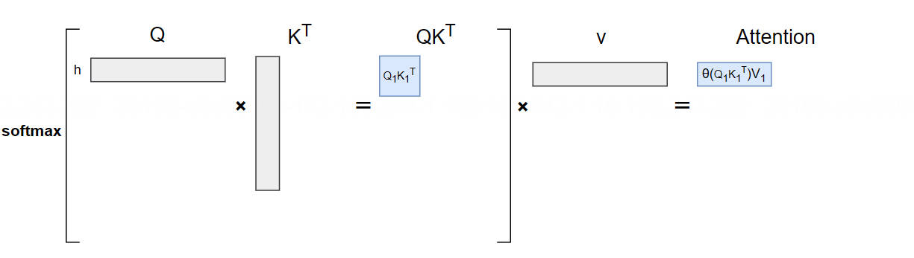
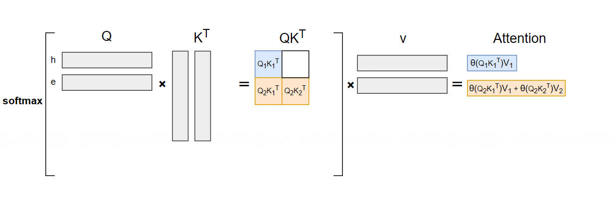
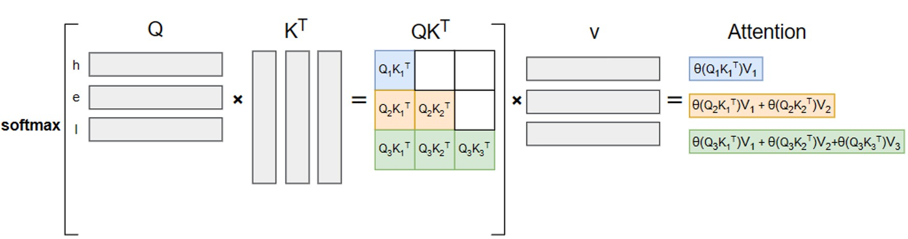
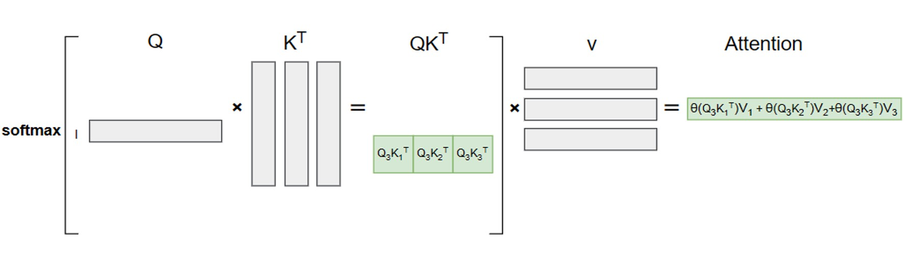
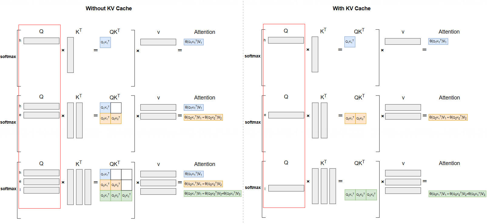
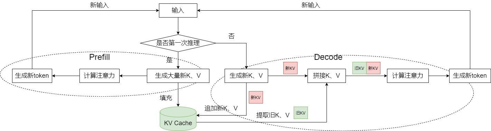

KV Cache 原理#
Author by: 张艺蓉
随着大型语言模型（LLM）的发展，模型生成的 token 长度不断增加，注意力阶段计算成为推理性能瓶颈。KV Cache 是解决这一问题的关键措施，它通过缓存已计算的 Key 和 Value 矩阵，避免在自回归生成过程中重复计算，从而显著提升推理效率。
本节旨在对 KV Cache 技术进行全面的梳理。我们将从大模型推理的基本流程出发，解释其计算瓶颈与 KV Cache 的设计动机。在此基础上，介绍 KV Cache 的原理，及其具体实现。最后，我们将对 KV Cache 的显存开销进行定量分析。
大模型推理过程#
大模型推理回顾#
我们先简要回顾一下大模型推理的过程。模型依据所有已知的历史 Token 序列 \([t_1, t_2,...,t_n]\)，来预测下一个最可能的 Token \(t_{n+1}\)，输出的 token 会与输入 tokens 拼接在一起，然后作为下一次推理的输入 \([t_1, t_2,...,t_n,t_{n+1}]\)，这样不断重复直到遇到终止符。

为实现高效推理，这个过程在实践中被划分为两个阶段：Prefill 阶段（Prompt phase）：Prefill 阶段的目标是一次性地、并行地处理用户输入的全部 Prompt，计算出用于预测第一个新 Token 的初始状态。
Decode 阶段（Token generation phase）：在 Prefill 阶段完成后，模型进入逐个 Token 的生成阶段。在每一步中，模型都将上一步生成的 Token 加入到历史序列中，并以此为基础预测下一个 Token，直到生成结束符或达到最大长度。
!!!!!!!!!!!!!!增加图更清楚 PD 两个阶段
大模型推理计算分析#
在了解了大模型的推理过程之后，现在来看在没有 KV Cache 的优化下，推理过程需要进行哪些计算。 我们先来看单个 token 自回归推理的计算流程，它会依次经过以下核心模块：
Embedding 层: 将输入的 Token 转换为其对应的词向量（Embedding Vector）。
QKV 计算: 词向量通过与三个不同的权重矩阵（\(W_q\)，\(W_k\)，\(W_v\)）相乘，生成该 Token 的 Query、Key 和 Value 向量。
因果注意力计算 (Causal Attention): 在计算每个时间步的注意力时，只关注当前时间步及之前的内容
前馈神经网络 (FFN): 注意力计算的输出会进一步通过一个前馈神经网络，得到该层最终的输出。这个输出将作为下一层的输入，或在最后一层用于预测下一个 Token。
整个过程的核心计算是注意力计算，其基础公式如下：
其中，\(Q\) (Query), \(K\) (Key), \(V\) (Value) 矩阵由输入序列 \(X\) 与对应的权重矩阵 \(W_Q\), \(W_K\), \(W_V\) 相乘得到：
为了方便描述，我们在之后的公式 he 中忽略 scale 项 \(\sqrt{d}\)。假设我们输入的 prompt 是 h，最终的输出是 hello。
因为这里计算的是 casual attention，根据定义，第 t 个 token 的公式表示如下： $\( Att_t = \text{softmax}\left( \frac{q_t K_t^T}{\sqrt{d_k}} \right) V_t \quad \text{其中 } K_t = \begin{pmatrix} k_1 \\ \vdots \\ k_t \end{pmatrix}, V_t = \begin{pmatrix} v_1 \\ \vdots \\ v_t \end{pmatrix} \)$
为了方便理解，在之后的步骤中，我们会将上述公式展开，用 \(softmaxed\) 表示 softmax 对矩阵计算后的结果，来直观表示每一步的 attention 计算。
第一步输入"h"的时候，attention 计算如下（图中 \(\theta\) 代表 softmax 计算后的结果）：

如上图所示，计算公式如下： $\( \text{Att}_1 = \text{softmaxed}(q_1 k_1^T) \cdot v_1 \)$
最终计算出了 token "e"，然后下一步我们输入"e",这个时候的 attention 计算变成了：

其计算公式为： $\( \text{Att}_2 = \text{softmaxed}(q_2 k_1^T) \cdot v_1 + \text{softmaxed}(q_2 k_2^T) \cdot v_2 \)$
然后我们计算出了 token"l",我们下一步输入"l",这个时候 attention 计算为:

其计算公式如下： $\( \text{Att}_3 = \text{softmaxed}(q_3 k_1^T) \cdot v_1 + \text{softmaxed}(q_3 k_2^T) \cdot v_2 + \text{softmaxed}(q_3 k_3^T) \cdot v_3 \)$
通过上述步骤可以看到，每一次计算当前 token 的 attention 都需要之前所有 token 的 K/V,为了能够计算这些 k/v 值,当我们不采取任何优化措施时，我们需要将之前的 token 也作为输入，这样才能够计算得到我们需要的 attention。
我们可以看到这种计算模式导致总计算复杂度与生成序列长度 \(T\) 的平方成正比 \(O(T^2)\)，这样的复杂度是不能忍受的。
KV Cache 基本原理#
!!!!!!! KV Cache 的原理可以参考这个增加更多的图例 https://zhuanlan.zhihu.com/p/662498827
因为有了上一节的分析，我们知道了每个 token decode 阶段具体需要用到哪些东西，由于大模型的推理是 Masked Self-Attention 每个 token 只能够看到其之前的 token 信息，因此当我们输入第 \(t\) 个 token 的时候，\(K_t\)，\(V_t\) 计算之后就是确定的，之后计算新的 attention 的时候，前面计算的 key 和 value 值并不会改变，我们自然想到直接将之前计算出的 key 和 value 向量缓存。
我们以第 3 个 token 为例，当我们缓存了之前的 K 与 V 之后，\(\text{Att}_t\) 计算只与当前的 \(Q_t\) 有关，因此，只需要将当前的 token 输入，那么 attention 矩阵计算变成了如下的流程：

我们可以清楚的看到与没有 KV Cache 相比,我们只需要输入当前的 token,然后利用缓存的 KV 就可以完成 KV 的计算。
下图直观的展示了是否使用 KV Cache 的计算对比。当我们不使用 KV Cache 的时候，在每一步生成 token 的过程中，都需要将之前所有的 token 作为模型输入，才能计算出之前所有 token 的 K/V 值；当我们使用 KV Cache 时，因为已经将之前所有 token 的 K/V 进行缓存，所以只需要将当前的 token 传入模型计算即可，大大降低了推理时的计算量。

而从上述图解和公式中，也可以清晰的看到为什么没有 Q Cache。因为之前 token 的 Q 在之后 token 的 attention 计算中根本不会用到。
最后做一下总结，KV Cache 的目的就是缓存之前 token 的 K 和 V 向量，避免重复计算，以降低推理开销，其在大模型推理过程中的总流程如下：

在 prefill 阶段开始保存初始的 KV Cache，之后在 decode 阶段每一次计算都将最新的使用保存的 KV Cache 与当前 token 最新的计算出的 KV 进行拼接，进行 self-attention 的计算。
KV Cache 具体实现#
了解了 KV Cache 的原理之后，其实现变的非常简单，本质上就是在上一次缓存的 Key 和 Value 上做 concat。
早期 KV Cache 实现#
!!!!!!! 给具体的代码加上中文注释哦
我们以 huggingface 的 Transformer 库的 gpt2 的实现为例transformers/src/transformers/models/gpt2/modeling_gpt2.py来看具体实现过程。
早期 KV Cache 的实现如下：
# 检查是否存在上一轮的缓存 (layer_past)
if layer_past is not None:
past_key, past_value = layer_past
# 将之前的 key 和当前计算出的 key 拼接
key = torch.cat((past_key, key), dim=-2)
# 将之前的 value 和当前计算出的 value 拼接
value = torch.cat((past_value, value), dim=-2)
if use_cache is True:
# 将拼接后、更新过的 key 和 value 作为新的缓存 (present) 准备返回
present = (key, value)
else:
present = None
在每层中，每个头的 Key 向量和 Value 向量存储在内存中。使用layer_past变量进行存储，其维度为[n, 2, b, h, s, d]，每个维度的含义如下：
第一维 num_layers：以每一个堆叠的 Block 为单位，例如堆叠 12 层，则一共有 12 组 Key、Value 信息。
第二维 2：代表 Key 和 Value 这两个信息对象，索引 0 是 Key 向量，索引 1 是 Value 向量。
第三维 batch_size：代表 batch_size，和输入需要推理的文本条数相等，如果输入是一条文本，则 b=1。
第四维 num_heads：代表注意力头的数量，例如每层有 12 个头，则 h=12。
第五维 seq_len：代表截止到当前 token 为止的文本长度，在每一个历史 token 位置上该 token 在每一层每个头下的 Key，Value 信息。
第六维 d：代表 Key、Value 向量的映射维度，若 token 总的映射维度为 768，注意力头数为 12，则 d=768/12=64。
通过 Cache 类实现#
这种直接在模型代码中通过元组（Tuple）传递之前 KV 缓存并手动torch.cat的方式，虽然直观，但存在几个严重的问题：
代码冗余：每一个支持 KV Cache 的模型都需要在自己的 Attention 模块中重复编写几乎完全相同的逻辑，一旦需要修改缓存逻辑，需要在不同的文件中进行修改。
扩展性不足：随着大模型技术的发展，出现了多种不同的 KV Cache 策略，比如
SinkCache，通过抛弃过去的 tokens，允许模型生成超出其上下文呢的长度。
为了解决上述问题，huggingface transformers 库引入了Cache API（[transformers/src/transformers/cache_utils.py ]）(https://github.com/huggingface/transformers/blob/main/src/transformers/cache_utils.py)，将 KV 缓存封装在一个专用的Cache对象中，这个对象不仅负责存储数据，还负责管理自身的更新逻辑。
Cache类主要成员与函数如下：
class Cache:
"""
所有缓存类的基类、抽象类。具体的数据结构由各个子类实现。
"""
is_compileable = False
def __init__(self):
super().__init__()
def update(
self,
key_states: torch.Tensor,
value_states: torch.Tensor,
layer_idx: int,
cache_kwargs: Optional[dict[str, Any]] = None,
) -> tuple[torch.Tensor, torch.Tensor]:
"""
更新缓存的核心方法。用新的 key_states 和 value_states 来更新指定层 (layer_idx) 的缓存。
返回:一个包含更新后、完整的 key 和 value 状态的元组。
"""
raise NotImplementedError("Make sure to implement `update` in a subclass.")
def get_seq_length(self, layer_idx: Optional[int] = 0) -> int:
"""返回缓存中状态的序列长度。可以任选传入一个层索引。"""
def get_max_cache_shape(self) -> Optional[int]:
"""返回缓存对象的最大序列长度（即最大容量）。"""
def get_usable_length(self, new_seq_length: int, layer_idx: Optional[int] = 0) -> int:
"""给定新输入的序列长度，返回缓存的可用长度。"""
def reorder_cache(self, beam_idx: torch.LongTensor):
"""为集束搜索（beam search）重排缓存，根据给定的选定束索引。"""
现在模型代码处理 KV Cache 的操作更加简单，只需要调用update()函数即可，具体的拼接逻辑由Cache类完成，如下所示：
# 检查是否存在缓存对象 (past_key_value)
if past_key_value is not None:
if isinstance(past_key_value, EncoderDecoderCache):
if is_cross_attention: # 如果是交叉注意力层，则从容器中取出交叉注意力的缓存
past_key_value = past_key_value.cross_attention_cache
else: # 否则取出普通的自注意力缓存
past_key_value = past_key_value.self_attention_cache
# 准备传递给 update 方法的额外参数，如 cache_position 用于更精细的内存操作
cache_kwargs = {"cache_position": cache_position}
# 调用缓存对象的 update 方法，将当前计算出的 key 和 value 更新到缓存中
# 该方法会返回拼接后完整的 key_states 和 value_states
key_states, value_states = past_key_value.update(
key_states, value_states, self.layer_idx, cache_kwargs=cache_kwargs
)
关于如何开启/关闭 KV Cache，transformers 库的generate方法通过use_cache参数来指定是否开启 KV Cache。
KV Cache 显存分析#
!!!!!!! 可以增加在长序列场景，KVCache 的增加的分析，特别是现在推理都需要长序列，对显存的影响
值得注意的是，KV Cache 的显存占用不可忽视。KV Cache 的显存占用公式如下：
其中：
2代表需要保存 K/V Cachenum_layers代表模型层数batch_size是批次大小seq_len指当前需要缓存的序列长度，等于 Prompt 的长度加上已经生成的 Token 数量hidden_size指的是隐藏层维度precision_in_bytes指的是用于存储每个数值的字节数,取决于模型的精度，如 FP32 需要 4 字节。
我们以 GPT3-175B 为例估算 KV Cache 占用显存，该模型主要参数如下：
模型 |
参数量 |
层数 |
隐藏层维度 |
|---|---|---|---|
GPT3 |
175B |
96 |
12288 |
我们假设序列总长度为 1024，批次大小为 16，精度为 FP16，则 KV Cache 占用显存为 \(2 \times 96 \times 16 \times 1024 \times 12288 \times 2 / 1024 / 1024 / 1024 = 72 GB\)。
这个显存占用量已经约为大模型参数量的一半，消耗了大量的显存资源，这也正是针对 KV Cache 的内存优化在大模型推理领域至关重要的原因。
长序列场景#
当前大模型推理向着支持更长上下文发展，随着序列长度的增加，KV Cache 线性增长，KV Cache 的显存占用成为了一个核心瓶颈。我们仍以上述 GPT-3 模型为例，当我们将序列长度从常规的 1024 扩展到目前常见的 32k，其 KV Cache 的显存占用将会变为： \(2 \times 96 \times 16 \times 32768 \times 12288 \times 2 / 1024 / 1024 / 1024 = 2304 GB = 2.25 TB\) 经过计算，在 32k 的序列长度下 KV Cache 的显存就需要 2.25TB，这样大的显存需求使得未经优化的长序列推理几乎是不可能做到的。
这种与序列长度成正比的显存增长，是制约大模型走向更长上下文的核心瓶颈之一。因此，如何有效管理和压缩 KV Cache，特别是在长序列场景下，成为了一个迫切需要解决的问题。因此催生了 PagedAttention，KV Cache 量化，滑动窗口注意力等一系列关键的推理优化技术。
总结与思考#
KV Cache 通过缓存历史 Token 的 Key 和 Value 矩阵，避免自回归生成过程中的重复计算，将注意力计算复杂度从 O(T²)降至 O(T)，显著提升大模型推理效率。
Decode 阶段，模型仅需将当前 Token 的 Q 向量与缓存的 K/V 矩阵拼接，直接计算注意力输出，无需重新处理全部历史 Token（如公式 \(\text{Att}_t = \text{softmax}(q_t \cdot \text{Cache}_K^T) \cdot \text{Cache}_V\) 所示）。
KV Cache 显存占用公式为 \(2 \times \text{层数} \times \text{批大小} \times \text{序列长} \times \text{隐藏层维度} \times \text{精度字节}\)，当模型序列越长，显存消耗越高。
本节视频#
引用与参考#
https://arxiv.org/pdf/2311.18677
https://zhuanlan.zhihu.com/p/624740065
https://www.cnblogs.com/rossiXYZ/p/18799503
https://zhuanlan.zhihu.com/p/630832593
https://zhuanlan.zhihu.com/p/662498827 !!!!!!!! 可以参考下面提供的链接，再补充一些小细节
https://zhuanlan.zhihu.com/p/662498827
https://blog.csdn.net/taoqick/article/details/137476233
https://blog.csdn.net/ningyanggege/article/details/134564203